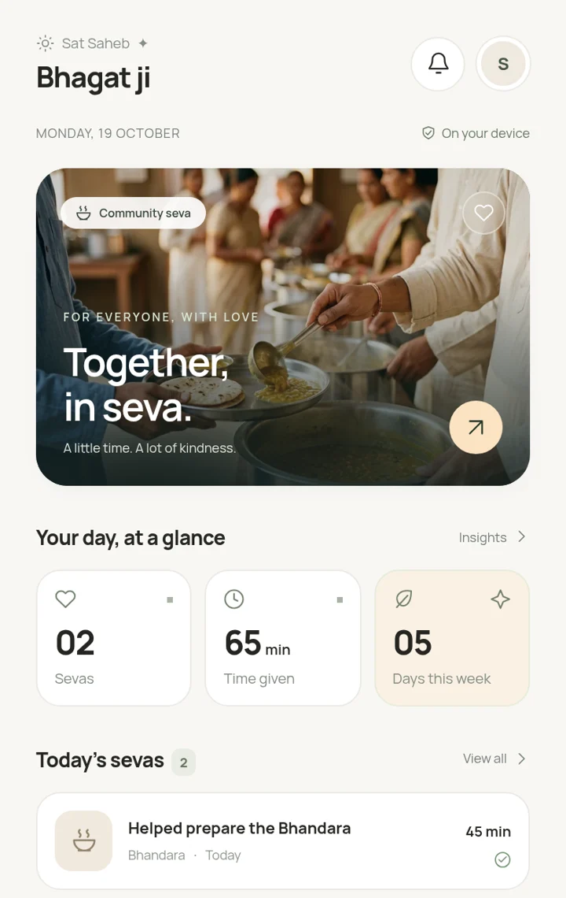

A journal for your seva.
Save your time, your service, and a little memory. Look back on your week with gratitude, not comparison.
A little space for the seva you do.
Private, peaceful, and always by your side.
For the followers of Sant Rampal Ji Maharaj.
An independent community companion, not an official app.

Save your time, your service, and a little memory. Look back on your week with gratitude, not comparison.
Read community announcements and create a thoughtful Bhandara invitation to share with your sangat.
Android Keystore encryption. Compressed local records. Password-protected backups. No journal uploads or analytics.
Download the complete .apk file, then open it in your Android file manager. Android may ask you to allow installation from your browser or file manager. This is a small but complete app, not a website shortcut. Keep Android System WebView updated. Before uninstalling, export an encrypted journal backup.
Installation & troubleshooting ↗